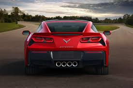
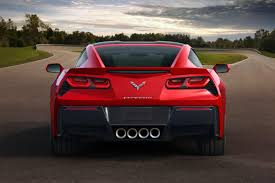
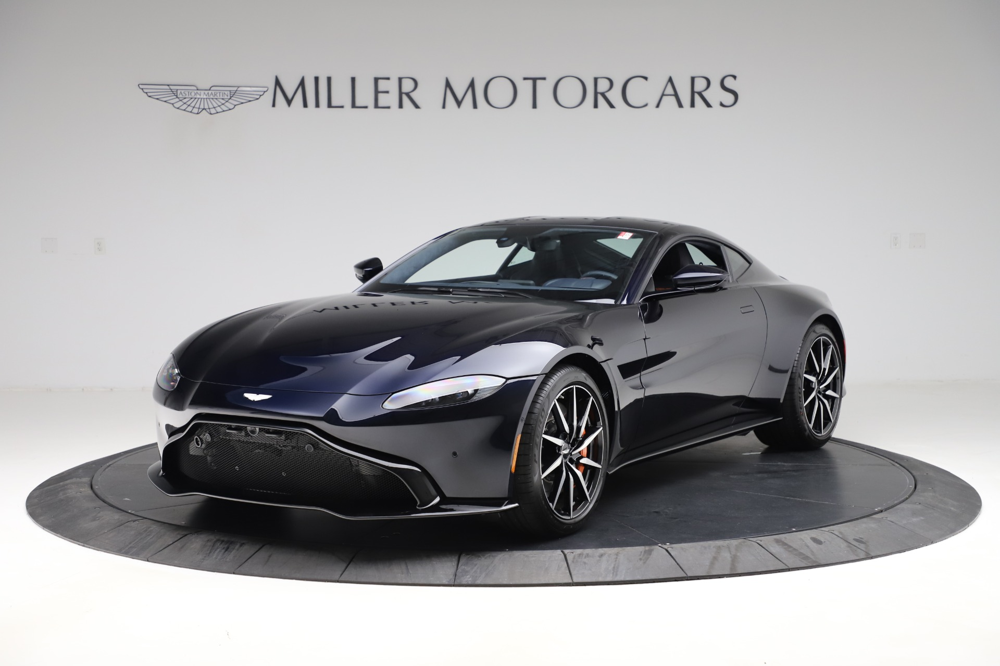
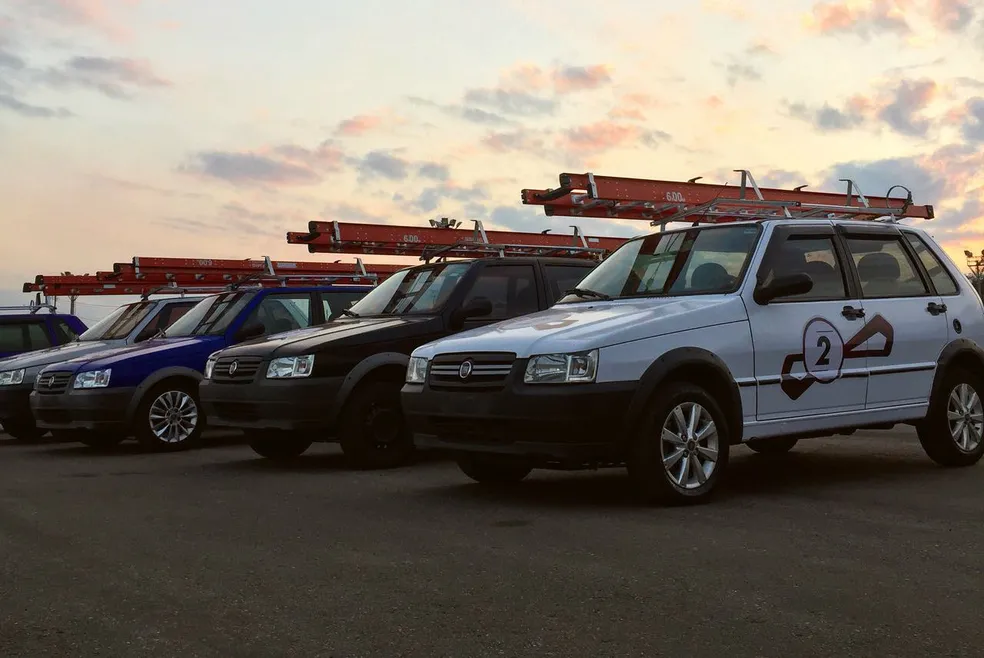

1: Chevrolet Corvette C7
 

O Chevrolet Corvette C7 é a sétima geração do famoso carro esportivo americano. Lançado em 2014, apresentava um design mais angular e agressivo, com opções de motores potentes, como um V8 de 6.2 litros que podia chegar a 650 cavalos de potência na versão Z06. Foi o primeiro Corvette a oferecer uma transmissão automática de oito velocidades. Em 2019, deu lugar ao Corvette C8, que introduziu o motor central-traseiro. O C7 é lembrado por seu design marcante e desempenho impressionante.
clique para escutar o ronco:
2: Aston Martin Vantage
O Aston Martin Vantage é um carro esportivo de alto desempenho conhecido por seu design elegante, potência excepcional e luxo de alta qualidade. Equipado com motores V8 ou V12, oferece uma experiência de condução emocionante com aceleração impressionante e velocidade máxima considerável. Seu interior combina materiais de alta qualidade, artesanato meticuloso e tecnologia avançada. O Vantage é uma máquina poderosa nas estradas, mantendo-se competitivo e relevante no mercado de carros esportivos de luxo.
clique para escutar o ronco
3: Mitsubishi Lancer Evolution

O Mitsubishi Lancer Evolution, também conhecido como "Evo", é um carro esportivo de alto desempenho conhecido por sua potência, tração nas quatro rodas e aerodinâmica agressiva. Equipado com motores turbo de quatro cilindros, oferece uma condução emocionante tanto nas estradas quanto em competições de rali. O Evo é apreciado por entusiastas por sua capacidade de personalização e modificação. A produção do Evo foi encerrada em 2016 após sua décima geração, deixando um legado duradouro no mundo dos carros esportivos.
clique para escutar o ronco
4: Ford Mustang 1970
O Ford Mustang de 1970 faz parte da terceira geração deste icônico modelo. Apresentava um design robusto e musculoso, com opções de carroceria como cupê, conversível e fastback. Oferecia uma variedade de motores potentes, incluindo o V8 Boss 302, e apresentava características de estilo e tecnologia da época em seu interior. Apesar dos desafios regulatórios da época, o Mustang de 1970 continua sendo um ícone da cultura automotiva americana.
clique para escutar o ronco
5: Uno com escada
O Fiat Uno Mille foi uma versão popular do Fiat Uno no Brasil, conhecida por seu preço acessível, economia de combustível e praticidade. Equipado com motores de menor cilindrada, era uma opção econômica e durável para os consumidores brasileiros. Sua produção foi encerrada em 2013, mas deixou um legado como um dos carros mais emblemáticos do mercado brasileiro.
O Fiat Uno Mille também ficou associado ao meme brasileiro do "Uno com escada", onde uma imagem do carro estacionado com uma escada amarrada precariamente ao teto se tornou um símbolo humorístico de situações improvisadas e inusitadas. Essa imagem viralizou na internet, ampliando ainda mais a notoriedade do Uno Mille na cultura popular brasileira.
ronco sem escada
ronco com escada